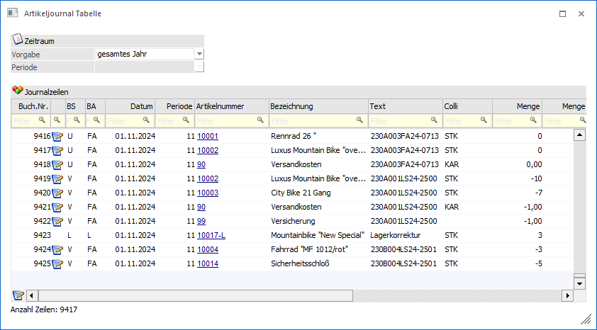
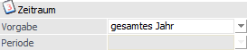
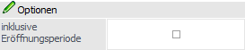
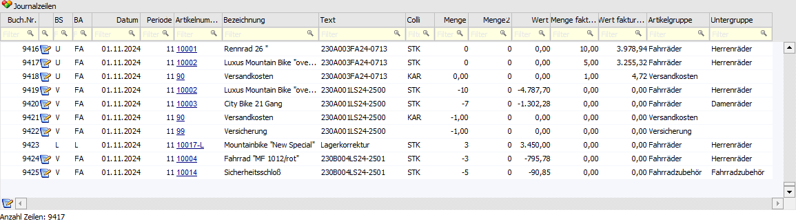
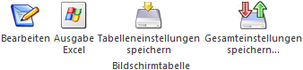
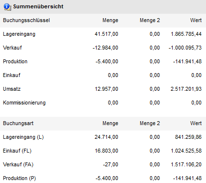

Durch die Anwahl des Ausgabe-Buttons "Ausgabe Tabelle" im Programm Artikeljournal werden alle zuvor selektierten Journalzeilen in Form einer WinLine Tabelle dargestellt.
Hinweis
Die Basis der Journalzeilen in der Tabelle bildet immer die Selektion im Artikeljournal. D.h. in der Tabelle kann dieses Datenmaterial nur weiter eingeschränkt werden.

Datum

Ø Zeitraum
An dieser Stelle kann gewählt werden, welcher Zeitraum in der Tabelle betrachtet werden soll. Hierbei stehen folgende Varianten zur Verfügung:
ü Periode
ü vorherige Periode
ü letzten 2 Perioden
ü letzten 3 Perioden
ü bis Periode
ü Quartal
ü Halbjahr
ü gesamtes Jahr
Hinweis
Alle Zeitraumeinstellungen (außer "gesamtes Jahr") beziehen sich auf die Auswahl im nachfolgenden Feld "Periode" / "Quartal" / "Halbjahr".
Ø Periode / Quartal / Halbjahr
Aufgrund der Einstellung im Feld "Zeitraum" kann an dieser Stelle eine Periode, ein Quartal oder ein Halbjahr zur Selektion ausgewählt werden.
Optionen

Ø inklusive Eröffnungsperiode
Bei den Zeiträumen "Quartal" und "Halbjahr" steht die Option "inklusive Eröffnungsperiode" zur Verfügung. Mit Hilfe dieser Einstellung kann definiert werden, ob die Buchungen der Periode "0" (Zeilen der Lagerstandsübernahme) ebenfalls angezeigt werden sollen.
Tabelle "Journalzeilen"

In der Tabelle werden alle selektierten Journalzeilen angezeigt. Mit Hilfe der Suchzeile kann gezielt und komfortabel nach Artikeljournalzeilen gesucht werden.
Hinweis
Neben den direkt angezeigten Spalten stehen viele optionalen Spalten zur Verfügung. Dieses können über das Kontextmenü der rechten Maustaste (Funktion "Spalten anzeigen/verstecken") in die Tabelle eingebunden werden. Die Mengenzuordnung pro Spalte wird wie folgt ermittelt:
ü Menge (Basis: Summe der Mengen der Zu- und Abgänge unter Berücksichtigung der Colli)
ü Menge2 (Basis: Summe der Mengen2 der Zu- und Abgänge unter Berücksichtigung der Colli)
ü Wert (Basis: Summe der Werte der Zu- und Abgänge unter Berücksichtigung der Colli)
ü Menge Zugang (Herkunft: L-Buchungen)
ü Menge2 Zugang Herkunft: L-Buchungen)
ü Wert Zugang (Herkunft: L-Buchungen)
ü Menge Abgang (Herkunft: V-Buchungen)
ü Menge2 Abgang (Herkunft: V-Buchungen)
ü Wert Abgang (Herkunft: V-Buchungen)
ü Menge Produktion (Herkunft: P-Buchungen)
ü Menge2 Produktion (Herkunft: P-Buchungen)
ü Wert Produktion (Herkunft: P-Buchungen)
ü Menge Fakturiert (Herkunft: U-Buchungen)
ü Menge2 Fakturiert (Herkunft: U-Buchungen)
ü Wert Fakturiert (Herkunft: U-Buchungen)
ü Menge Kommissionierung (Herkunft: K-Buchungen)
ü Menge2 Kommissionierung (Herkunft: K-Buchungen)
ü Wert Kommissionierung (Herkunft: K-Buchungen)
Tabellenbuttons

Ø Bearbeiten
Durch Anwahl des Buttons bearbeiten wird der Beleg, durch welchen die Artikeljournalzeile entstanden ist, im Belegmanagement angezeigt. Dort kann der Beleg dann bearbeitet werden.
Hinweis
Diese Funktion wird bei Buchungen, welche nicht auf Grundlage eines Belegs entstanden sind, nicht unterstützt.
Ø Ausgabe Excel
Durch Anwahl des Buttons "Ausgabe Excel" wird der Inhalt der Tabelle an Microsoft Excel übergeben.
Ø Tabelleneinstellungen speichern
Die Spalten einer Tabelle können grundsätzlich an beliebige Positionen verschoben, bzw. in der Breite entsprechend angepasst werden. Durch Anwahl des Buttons "Tabelleneinstellungen speichern" werden die Einstellungen benutzerspezifisch gespeichert und bei dem nächsten Aufruf des Programmpunktes wieder vorgeschlagen.
Ø Gesamteinstellungen speichern
Im Gegensatz zu "Tabelleneinstellungen speichern" können mit "Gesamteinstellungen speichern" mehrere Tabellenaufbauten gespeichert und nach Wunsch geladen werden. Zusätzlich werden Sonderfunktionen der Tabelle (z.B. "Spalte gruppieren") ebenfalls bei der Speicherung bedacht.
Buttons
Ø Anzeigen
Durch Anwahl des Buttons "Anzeigen" bzw. der Taste F5 werden alle Suchkriterien der Suchzeile aufgehoben und der Inhalt der Tabelle neu aufgebaut.
Ø Ende
Mit Hilfe des Buttons "Ende" bzw. der Taste ESC wird das Fenster geschlossen.
Ø Summenanzeige
Durch Anwahl des Buttons "Summenanzeige" wird im rechten Bereich des Fensters ein Informationsbereich dargestellt. In diesem werden die Summenwerte der Buchungsarten und Buchungsschlüssel angezeigt.
Beispiel

Hinweis
Handelt es sich um Eröffnungsbuchungen von Hauptartikel mit Ausprägungen, so werden die Hauptartikelbuchungen in der Summenübersicht generell nicht berücksichtigt!